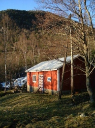
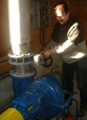

Nach einigen Jahren Planung und einem anstrengendem halbem Jahr der Bauphase wird das Wasserkraftwerk nun endlich da betrieben,
wo schon einst das alte Wasserkraftwerk stand.
Es ist keine neue Idee, Strom aus dem Wasserfall zu gewinnen. Zwischen 1950 und 1975 betrieb schon Kari's Vater ein Wasserkraftwerk,
welches die Hälfte der Farmen in der Umgebung im eigenen Stromnetz mit Elektrizität belieferte.
Heute produzieren zwei Induktionsgeneratoren insgesamt 150 kW. Der Strom wird durch das Stromnetz von Lyse Energie zu unseren
eigenen Abnehmer befördert. Mit unseren 1,3 GWh (1,3 Millionen kWh) pro Jahr können wir bis zu 60 Haushalte mit Strom versorgen.

Fossane grenzt an einen Wasserfall, welcher ein Teil des Flusses Tøtlandsåna ist, und die Hälfte der Rechte des Wasserfalls
sind in unserem Besitz. Die andere Hälfte ist an unseren 4 Nachbarn auf der anderen Seite des Flusses vermietet.
Tøtlandsåna ist ein Teil des Flusses Vormo. Da das ein geschützter Fluss ist, legt das Norwegische Wasserressource- und Energiedirektorat
(NVE) bestimmte Bedingungen auf. Es dürfen nicht mehr als 15% der normalen Wasserkraft des Flusses genutzt werden, das sind
4200 l/s, und es muss immer eine Mindestwasserzufuhr von 500 l/s dem Fluss erhalten bleiben.